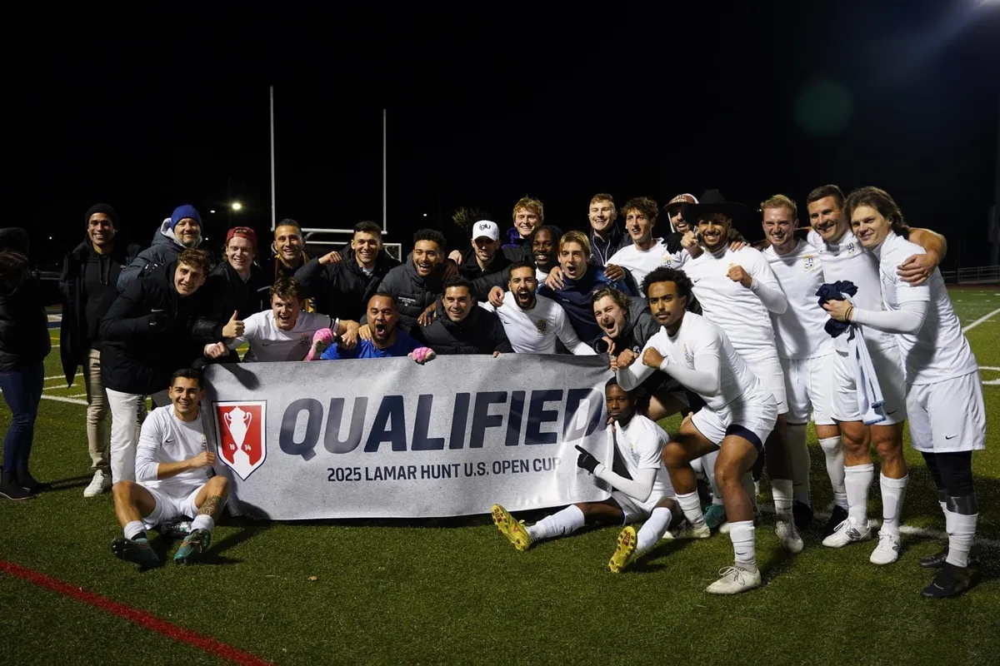
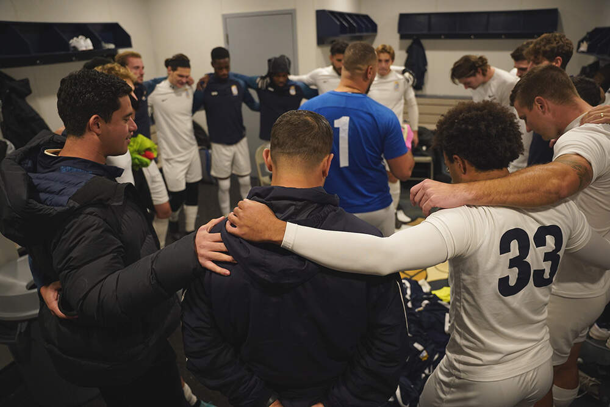

THE BLAZING MUSKET • MARCH 19, 2025
CD Faialense Players Preparing For The Biggest Game Of Their Lives
A look at the team, its brotherhood, and the preparation behind Faialense's historic U.S. Open Cup run.
Read Article →
U.S. SOCCER • FEBRUARY 25, 2026
U.S. Soccer takes a look inside CD Faialense, its Portuguese-American roots, six-decade history, and the club's modern resurgence.
Read Article →
THE BLAZING MUSKET • MARCH 19, 2025
A look at the team, its brotherhood, and the preparation behind Faialense's historic U.S. Open Cup run.
Read Article →
WBUR • MARCH 20, 2025
WBUR profiles the Cambridge-based Portuguese soccer club and its journey to the U.S. Open Cup.
Read Article →September 3rd, 2026
March 17th, 2026
November 22nd, 2025
October 12th, 2025
March 20th, 2025